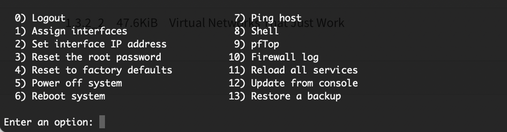
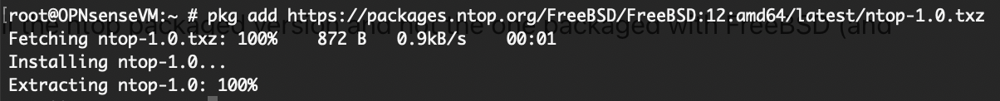
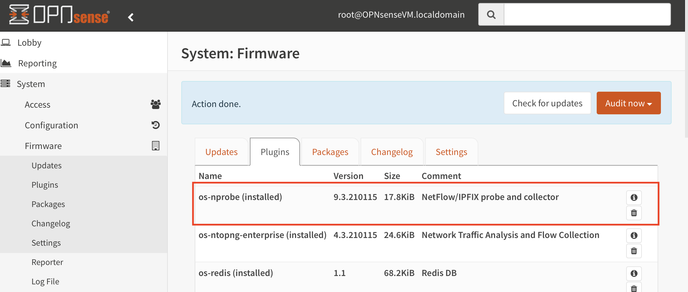
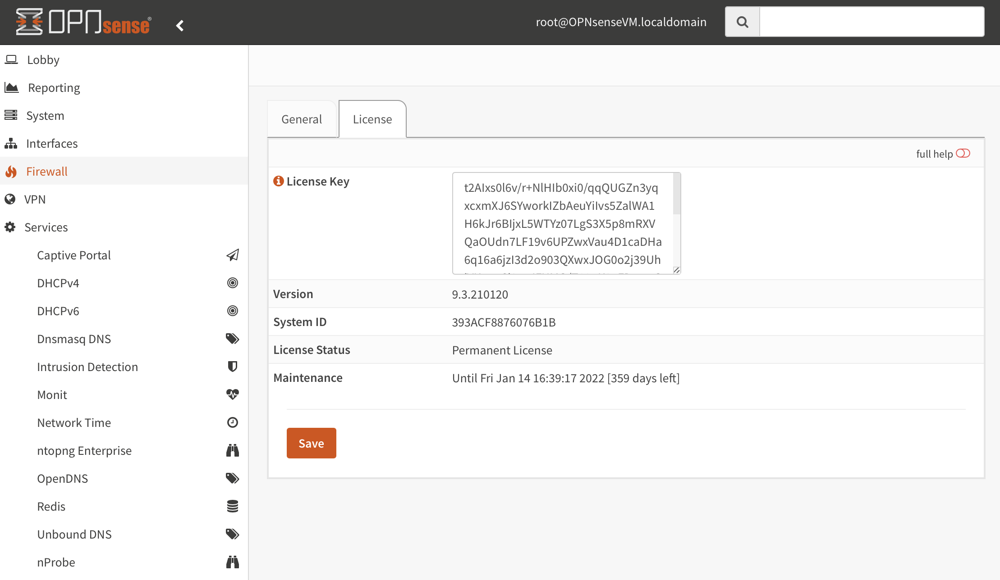
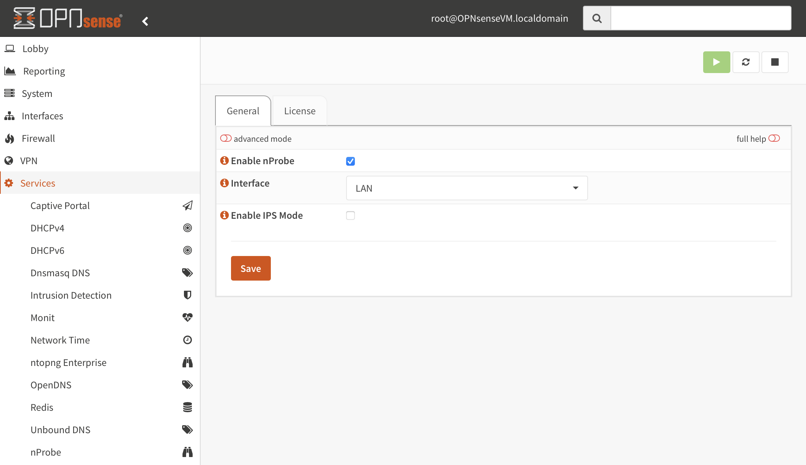

OPNsense
nProbe можно установить на OPNsense как плагин через веб-интерфейс (рекомендуется) или с помощью командной строки. В обоих случаях репозиторий ntop для FreeBSD должен быть настроен, как описано в https://packages.ntop.org/FreeBSD/.
Конфигурация репозитория
Войдите в оболочку OPNsense как администратор (выберите вариант 8).

OPNsense Ракушка
И установите репозиторий, используя команду, указанную по адресу https://packages.ntop.org/FreeBSD/ (вы можете вырезать и вставить команду ниже).
pkg add https://packages.ntop.org/FreeBSD/FreeBSD:13:amd64/latest/ntop-1.0.pkg
Примечание
В более старых версиях OPNsense префикс пакета — .txz, поэтому команда будет pkg add. https://packages.ntop.org/FreeBSD/FreeBSD:12:amd64/latest/ntop-1.0.txz
Результат должен выглядеть так, как показано ниже.

ntop Установка репозитория
Установка плагина
Примечание
Для установки плагинов в OPNsense необходимо войти в систему как администратор.
Перейти к Система > Прошивка > Плагины страницу и нажмите на кнопку Проверьте наличие обновлений.

Плагины — проверьте наличие обновлений
ос-nprobe Плагин должен появиться в списке и его можно будет установить нажав на + символ.

nProbe Установка плагина
Конфигурация лицензии
Перейти к Услуги > nProbe > Настройки > Лицензия чтобы получить всю необходимую информацию генератором лицензий (Версия и Идентификатор системы).

nProbe Информация
Лицензию можно установить на той же странице, вставив ее в Лицензионный ключ box и сохраняем конфигурацию. Службу следует перезапустить в Общий страница.
nProbe Конфигурация
Собираюсь в Услуги > nProbe > Настройки > Общий можно настроить сервис nProbe. Базовая конфигурация обычно включает следующие шаги:
Включите службу, проверив Включить nProbe
Выберите захват Интерфейс

nProbe Конфигурация
Сохраните конфигурацию и запустите службу.
По умолчанию nProbe прослушивает коллекторы через ZMQ на порту по умолчанию. Выберите расширенный режим изменить порт или включить Режим зонда что обычно полезно при развертывании nProbe за NAT/Брандмауэром, чтобы он мог подключиться к сборщику в качестве клиента.
Обратите внимание, что можно использовать nProbe для доставки информации о дорожной обстановке на местный ntopng. экземпляр, установив ОС-ntopng-предприятие плагин и включение Подключиться к nProbe флаг в ntopng Предприятие Страница конфигурации плагина. Пожалуйста, взгляните на ntopng руководство по плагину для получения дополнительной информации.